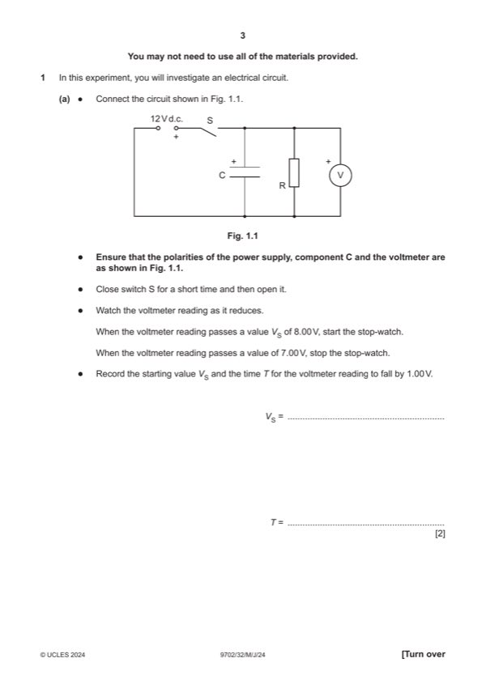

Question 1

Original paper page 3
Part 1(a) — solution
Value of T in range 5.00–8.00 s with unit. 1
Evidence of repeat measurements of T. 1
Mark points
- Include the ideas shown in the solution above.
Part 1(b) — solution
Six sets of readings of VS (different values) and T with correct trend (average T increases as VS decreases) and without 5
help from the Supervisor scores 5 marks, five sets scores 4 marks etc.
Range: VS (min) ⩽ 4.00 V and VS (max) ⩾ 10.00 V. 1
Column headings: 1
Each column heading must contain a quantity and a unit where appropriate.
The presentation of quantity and unit must conform to accepted scientific convention e.g. 1 / T / s–1.
Consistency: All values of T must be given to the nearest 0.01 s (or all to the nearest 0.1 s). 1
Significant figures: 1
Values of 1 / T given to same number of s.f. as (or one more than) the number of s.f. in T.
Calculation: Values of 1 / T calculated correctly 1
Mark points
- Include the ideas shown in the solution above.
Part 1(c)(i) — solution
Axes: 1
Axes must be labelled with the required quantities.
Scales must be chosen so that the plotted points occupy at least half the graph grid in both the x and y directions.
Scale markings are no more than 2 cm (one large square) apart.
Sensible scales must be used. Scales must not be awkward (e.g. 3:10 or fractions).
Plotting of points: 1
All observations in the table must be plotted on the grid.
Diameter of plotted points must be ⩽ half a small square.
Points must be plotted to an accuracy of half a small square in both the x and y directions.
Quality: 1
All points in the table (at least 5) must be plotted on the grid.
Trend must be correct.
It must be possible to draw a straight line that is within 0.40 V on the Vs axis of all plotted points.
University Press & Assessment 2024 Page 5 of 8
9702/32 Cambridge International AS & A Level – Mark Scheme May/June 2024
Mark points
- Include the ideas shown in the solution above.
Part 1(c)(ii) — solution
Line of best fit: 1
‘Best fit’ is judged by balance of all points on the grid (at least 5 points) about the candidate’s line.
There must be an even distribution of points either side of the line along the full length.
Lines must not be kinked or thicker than half a small square.
Some candidates may choose to identify an anomalous point. If they identify one point as anomalous (e.g. by circling or
labelling) then this point is to be disregarded when judging the line of best fit. There must be at least 5 points left after the
anomalous point is disregarded.
Mark points
- Include the ideas shown in the solution above.
Part 1(c)(iii) — solution
- Correct read-off from a point on the line and substituted correctly into y = mx + c or an equivalent expression
- Intercept read directly from the graph, with read-off at Vs = 0, accurate to half a small square in y direction
Mark points
- Correct read-off from a point on the line and substituted correctly into y = mx + c or an equivalent expression
- Intercept read directly from the graph, with read-off at Vs = 0, accurate to half a small square in y direction
Part 1(d) — solution
- Value a = candidate’s gradient and value of b = candidate’s intercept. 1
Mark points
- Value a = candidate’s gradient and value of b = candidate’s intercept. 1
Part 1 — solution
mark for each point up to a maximum of 4.
Mark points
- Include the ideas shown in the solution above.
Part 1 — solution
mark for each point up to a maximum of 4.
University Press & Assessment 2024 Page 8 of 8
Mark points
- Include the ideas shown in the solution above.